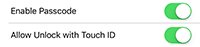
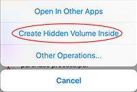
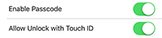
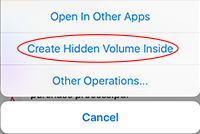
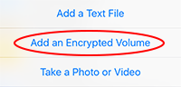
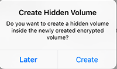

Encryption
We provide following three levels of protection:
- App passcode and Touch ID. After enable the function, people don’t know the passcode or Touch ID cannot use the App. However, when the device is connect to PC or Mac, other people may read files in the App through iTune or software like iExplorer. So, it’s only the basic level of protection, though some other Apps only provide such protection.

- Encrypted disk. We use the TrueCrypt (and its successor VeraCrypt) virtual disk encryption format, an open, popular, 3rd party audited, and time-tested format (used about ten years, see its security discussions later). An encrypted virtual disk file appears as an ordinary file before it is opened, but actually it contains an encrypted file system (the App uses AES-256 encryption algorithm and supports other algorithms as well). The encrypted file system can be viewed and modified if and only if its encryption key is provided for decryption. Encrypting the whole file system not only encrypts the contents of your files, but also encrypts the meta data of files, like file name and size. Such idea is also widely used in desktop OS for better protection (like the Mac OS X’s FileVault solution).
- Hidden encrypted disk. It is for the case that the user may be forced to reveal the password of an encrypted disk file (e.g., holden by bad guys or asked by his girlfriend). A hidden encrypted disk is a disk created at the back portion of an outer encrypted disk file. If others do not know the password of hidden encrypted disk, they not only cannot view the content of hidden encrypted disk, but also cannot even know the existence of hidden encrypted disk. Thus, the user could put the most secret files into hidden encrypted disk, and when he/she was forced to reveal the password of the disk file, he/she only needs to reveal the password of the outer crypto disk and deny the existence of the hidden crypto disk.

- App passcode and Touch ID. After enable the function, people don’t know the passcode or Touch ID cannot use the App. However, when the device is connect to PC or Mac, other people may read files in the App through iTune or software like iExplorer. So, it’s only the basic level of protection, though some other Apps only provide such protection.

- Encrypted disk. We use the TrueCrypt (and its successor VeraCrypt) virtual disk encryption format, an open, popular, 3rd party audited, and time-tested format (used about ten years, see its security discussions later). An encrypted virtual disk file appears as an ordinary file before it is opened, but actually it contains an encrypted file system (the App uses AES-256 encryption algorithm and supports other algorithms as well). The encrypted file system can be viewed and modified if and only if its encryption key is provided for decryption. Encrypting the whole file system not only encrypts the contents of your files, but also encrypts the meta data of files, like file name and size. Such idea is also widely used in desktop OS for better protection (like the Mac OS X’s FileVault solution).
- Hidden encrypted disk. It is for the case that the user may be forced to reveal the password of an encrypted disk file (e.g., holden by bad guys or asked by his girlfriend). A hidden encrypted disk is a disk created at the back portion of an outer encrypted disk file. If others do not know the password of hidden encrypted disk, they not only cannot view the content of hidden encrypted disk, but also cannot even know the existence of hidden encrypted disk. Thus, the user could put the most secret files into hidden encrypted disk, and when he/she was forced to reveal the password of the disk file, he/she only needs to reveal the password of the outer crypto disk and deny the existence of the hidden crypto disk.

Detail features:
- Support passcode lock and Touch ID (device needs to support Touch ID). Passcode can be simple (4 digits) or complex (unlimited on length and type). The App will deny any login for half an hour after 3 failed login attempts. Users need to reset the App if they forget the passcode (the passcode and all App data would be cleared at the same time).- Support to create, open, and modify TrueCrypt/VeraCrypt format crypto disks. Tapping on the “+” button on toolbar and select "Add an Encrypted Volume" will trigger a dialog, and after inputting information you can create an crypto disk. Simply tapping on crypto disk files with .vol, .vc, or .tc extension, you will be prompt to enter password to open the files. For crypto disk files without .vol or .tc extension, you long-press on them and click the pop up menu “Open as Encrypted Volume” to open them. You can modify the files inside a crypto disk after you open it.

- Support hidden crypto disk. After you create an crypto disk, you will be prompted for whether to create a hidden crypto disk inside it now. If you choose to create, there will be a dialog shown for collecting information to create. If you choose to not create at that time, later you could long-press on the crypto disk file and select "Create Hidden Volume Inside" to continue the creation. Hidden crypto disk is opened similarly with outer crypto disk; the difference is that you need to input the password of the hidden crypto disk but not the password of the outer crypto disk (so the two passwords must be different). You should pay attention to two things when using hidden crypto disk. The first one is that you can only create one hidden crypto disk inside an outer crypto disk (if you create a hidden disk again the previous one will be overwritten). Another thing is that you should not write too much data in the outer volume that makes the files in the outer disk overlap with the space of the hidden crypto disk at the back side. Otherwise the hidden disk will be corrupted.

- Only support crypto disks with FAT (FAT12, FAT16 and FAT32) file system now and do not support crypto disks with NTFS file system.
- On your Mac or PC, you could use Truecrypt 7.1a to open TrueCrypt format disks (http://www.truecrypt71a.com), or VeraCrypt 1.0f to open VeraCrypt/TrueCrypt format disks (https://veracrypt.codeplex.com).
- The file management inside crypto disk is generally the same as outside file system, except some differences caused by the limitations of iOS APIs or out current implementation:
a. archived files (zip or rar) need to be copied to outside to open;
b. audio and video files are automatically copied to outside cache folder before played, and are deleted automatically after played;
c. the photo viewers in and outside crypto disks are different.